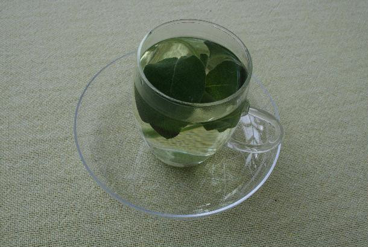

Dieses Grundlagenmodul wird Sie unterstützen, erfolgreicher nach Literatur für Ihr Studium zu recherchieren.
Dabei geht es um folgende Prinzipien und Techniken einer Recherche:
Lesen Sie zunächst die Erläuterungen zu jedem Thema. Im Anschluss können Sie die Tipps gleich im Recherchecafé* ausprobieren. Aber Achtung! Im Recherchecafé* bekommen Sie nur das, was Sie bestellen, und das ist nicht immer das, was Sie auch wünschen.
* Das Recherchecafé wurde von der Idee des Boole`schen Restaurants inspiriert, vgl. Donald A. Barclay: Teaching the standard features of electronic databases. In: Teaching electronic information literacy : a how-to-do-it manual / ed. by Donald A. Barclay. New York: Neal-Schuman, 1995. S. 65 sowie Detlev Bieler, Thomas Hapke, Oliver Marahrens, TUB Hamburg-Harburg: DISCUS
Zu Beginn Ihrer Recherche sollten Sie sich verdeutlichen, ob Sie formal oder inhaltlich (sachlich, thematisch) suchen:
Bei einer formalen Suche haben Sie (mehr oder weniger vollständige) Angaben einer Quelle, z.B. aus einer Literaturliste oder durch den Tipp eines Professors. Die genaue Eingabe dieser Angaben führt schnell zu einem Nachweis, ob diese Quelle für Sie verfügbar ist. Die meisten Ressourcen tolerieren allerdings keine Tippfehler.
Bei einer inhaltlichen Suche kennen Sie die Quelle nicht genau und wissen nicht, ob Sie die richtigen Suchbegriffe gewählt haben, ob es überhaupt Quellen zu dem gesuchten Thema gibt, und wenn ja, wie viele.
Die meisten Ressourcen bieten neben der Freitextsuche in allen Feldern - zumindest in der Option „erweiterte Suche“ - eine feldbezogene Suche an. In der formalen Suche ist die Nutzung des Feldes "Autor" vorteilhaft, wenn der Autorenname auch ein Titelstichwort sein kann. In der inhaltlichen Suche ist die Nutzung der Felder "Schlagwort" und "Klassifikation" vorteilhaft. Dazu mehr in späteren Abschnitten.
Auf der folgenden Seite finden Sie Beispiele für formale Suchen.
1. In einer Literaturliste finden Sie die Angaben „Nicholas Gregory Mankiw: Grundzüge der Volkswirtschaftslehre. 4. Aufl. Schäffer-Poeschel, 2008“: Im Bibliothekskatalog finden Sie das gewünschte Buch wenn Sie im Feld "alle Wörter" jedes beliebige Stichwort aus diesen Angaben eingeben, z.B.
2. Ihr Professor empfiehlt Ihnen in Fragen des bibliothekarischen Grundwissens (z.B. Was ist ein Stichwort?) im „Hacker“ nachzuschlagen: Wenn Sie nun im Bibliothekskatalog Hacker über das Feld alle Wörter suchen, werden Sie viele Treffer erzielen, die nichts mit der gesuchten Person zu tun haben, sondern mit IT-Spezialisten.
Wenn Sie hingegen im Feld "Person, Autor" den Suchbegriff "Hacker" eingeben, finden Sie nur Bücher, deren Autor ein Mensch namens Hacker ist. – Übrigens: Die meisten Ressourcen verlangen im Feld Autor die Ansetzung „Nachname, Vorname“, also
Sie können nun diese Tipps im Recherchecafé ausprobieren. Aber Achtung! Im Recherchecafé bekommen Sie nur das, was Sie bestellen. Das ist nicht immer das, was Sie auch wünschen und manchmal bekommen Sie vielleicht auch gar nichts.
Sie können nun diese Tipps im Recherchecafé ausprobieren. Aber Achtung! Im Recherchecafé bekommen Sie nur das, was Sie bestellen. Das ist nicht immer das, was Sie auch wünschen und manchmal bekommen Sie vielleicht auch gar nichts.
Das Trunkierungszeichen (auch Wildcard-Operator, Joker oder Platzhalter genannt) ersetzt bei der Suchanfrage
In den meisten Ressourcen wird das Sternchen (Asterisk, *) verwendet, in anderen !, ?, $ oder #. Prüfen Sie in jeder Ressource in den Hilfetexten, welches Zeichen für welche Abkürzung verwendet wird.
In den meisten Ressourcen ist die Rechts- oder Endtrunkierung möglich, in einigen zusätzlich die Links- oder Anfangstrunkierung.
Sie geben in eine Ressource me?er ein und erhalten Treffer, in denen folgende Worte vorkommen:
ie geben in einer Ressource wirtschaft* ein und erhalten Treffer, in denen z.B. folgende Worte vorkommen, z.B.
Sie geben in einer Ressource *wirtschaft* ein und erhalten zusätzlich Treffer, in denen z.B. folgende Worte vorkommen:
Sie können nun diese Tipps im Recherchecafé ausprobieren. Aber Achtung! Im Recherchecafé bekommen Sie nur das, was Sie bestellen. Das ist nicht immer das, was Sie auch wünschen und manchmal bekommen Sie vielleicht auch gar nichts.
Eine Form der Verknüpfung kennen Sie aus dem Umgang mit Suchmaschinen: Wenn Sie mehrere Suchbegriffe, durch Leerzeichen voneinander getrennt, hintereinander schreiben, erhalten Sie Treffer, in denen alle Suchbegriffe vorkommen, unabhängig von der Reihenfolge und den Zusammenhängen. In manchen Ressourcen werden diese Verknüpfungs-Operatoren durch Zeichen oder Wörter dargestellt, in manchen durch Felder zum Anklicken.
Nachfolgend finden Sie die wichtigsten Verknüpfungsoperatoren und Beispiele.
Dieser Verknüpfungsoperator findet alle Treffer, in denen alle verknüpften Suchbegriffe vorkommen.
Die Eingabe mankiw UND volkswirtschaftslehre findet
Dieser Verknüpfungsoperator findet alle Treffer, in denen mindestens ein Suchbegriff vorkommt.
Achtung! Anders als im normalen Sprachgebrauch handelt es sich hier nicht um ein exklusives ODER („Christin oder Jakob machen den Abwasch“), sondern um ein inklusives ODER („Christin oder Jakob oder beide …“)!
Die Eingabe mankiw ODER volkswirtschaftslehre findet
Dieser Verknüpfungsoperator findet alle Treffer, in denen der markierte Suchbegriff nicht vorkommt.
Vorsicht! Sie schließen dabei möglicherweise interessante Treffer aus, weil zufällig der Suchbegriff in ihm vorkommt!
Die Eingabe volkswirtschaftslehre NICHT mankiw findet findet
Dieser Verknüpfungsoperator legt die maximalen Abstände zwischen den Suchbegriffen und eventuell ihre Reihenfolge fest. Siehe Hilfetexte der Ressourcen!
Die Eingabe gesellschaft w/2 medien (w/2 bedeutet, dass nicht mehr als 2 Worte zwischen den Suchbegriffen liegen) findet:
Wollen Sie mehr als zwei Suchbegriffe mit unterschiedlichen Operatoren verknüpfen, so müssen Sie Klammern setzen, um deutlich zu machen, in welcher Reihenfolge die Verknüpfungen abgearbeitet werden sollen.
Damit haben Sie die Suche präkombiniert, d.h. Sie haben die Suche vor der Abfrage vollständig formuliert.
Eine andere Methode ist die Postkoordination: Dabei führen Sie die Abfragen nacheinander einzeln durch, rufen die Suchgeschichte auf und koordinieren die Ergebnisse im Nachhinein. Manchmal ist es günstiger, die Treffermengen nach und nach einzuschränken.
Sie rufen die Suchgeschichte auf und koordinieren diese vier Ergebnisse im Nachhinein:
Nun koordinieren Sie auch noch die Ergebnisse der Suchen 5 und 6:
Sie können nun diese Tipps im Recherchecafé ausprobieren. Aber Achtung! Im Recherchecafé bekommen Sie nur das, was Sie bestellen. Das ist nicht immer das, was Sie auch wünschen und manchmal bekommen Sie vielleicht auch gar nichts.
Sie können nun diese Tipps im Recherchecafé ausprobieren. Aber Achtung! Im Recherchecafé bekommen Sie nur das, was Sie bestellen. Das ist nicht immer das, was Sie auch wünschen und manchmal bekommen Sie vielleicht auch gar nichts.
Sie können nun diese Tipps im Recherchecafé ausprobieren. Aber Achtung! Im Recherchecafé bekommen Sie nur das, was Sie bestellen. Das ist nicht immer das, was Sie auch wünschen und manchmal bekommen Sie vielleicht auch gar nichts.
Sie können nun diese Tipps im Recherchecafé ausprobieren. Aber Achtung! Im Recherchecafé bekommen Sie nur das, was Sie bestellen. Das ist nicht immer das, was Sie auch wünschen und manchmal bekommen Sie vielleicht auch gar nichts.
Die Phrasensuche kennen Sie aus dem Umgang mit Suchmaschinen: Wenn Sie eine bestimmte Wortfolge in Anführungszeichen setzen, bekommen Sie Treffer, in denen genau diese Wortfolge vorkommt. Wenn Sie die Anführungszeichen weglassen, bekommen Sie hingegen Treffer, in denen die Worte unabhängig von der Reihenfolge vorkommen.
Manche Ressourcen erlauben das Setzen eines Trunkierungszeichens (Wildcard-Operator, Joker, Platzhalter, s.o.) innerhalb der Phrasensuche. Es ersetzt dann nicht einen oder mehrere Buchstaben, sondern ein Wort. Es gibt auch gelegentlich Abstandsoperatoren, mit denen Sie den Abstand festlegen können, der maximal zwischen zwei Teilen einer Phrase liegen darf. Bitte lesen Sie die Hilfetexte der jeweiligen Ressource, um diese Suchformulierung zu erfahren.
Mit der Eingabe grundzüge der volkswirtschaftslehre im Feld alle Wörter erhalten Sie u.a.
Mit der Eingabe gesellschaft * medien im Feld Titel erhalten Sie u.a.:
Manche Ressourcen bieten eine Schlagwortsuche an, auf Englisch werden dafür die Benennungen „Descriptor“, „Subject (Term)“ und gelegentlich „Keyword“ benutzt.
Gemeint ist damit, dass eine Indexiererin oder ein Indexierer den Inhalt eines Dokuments mit Schlagworten beschreibt, die unabhängig von der Terminologie des Dokuments sind. Die Schlagworte werden einer Wortliste mit kontrolliertem Vokabular (einem Thesaurus) entnommen und sind damit standardisiert. So wird in deutschsprachigen Schlagwortsystemen durchweg die Einzahl verwendet, in englischsprachigen überwiegend die Mehrzahl. Homonyme werden durch Zusätze eindeutig gemacht („Krebs <Tier>“, „Krebs <Erkrankung>“) und Synonyme werden vermieden.
Die Suche mit Schlagworten führt zu besseren Ergebnissen, weil nach Inhalten gesucht wird und nicht nach Begriffen, die zufällig auch in dem Dokument vorkommen, aber wenig mit dem Inhalt des Dokuments zu tun haben.
Welches Schlagwort für welchen Zusammenhang benutzt wird, erfahren Sie beispielsweise, indem Sie mit Stichworten Zufallstreffer erzielen und die Schlagworte, die für diese Zufallstreffer vergeben wurden, notieren und mit ihnen eine neue Suche starten.
Mit der Eingabe total quality management im Feld Alle Wörter finden Sie u.a.
In den Metadaten dieses Dokuments sehen Sie, dass für diese Quelle u.a. das Schlagwort “Qualitätsmanagement” vergeben wurde. Mit der Suche Qualitätsmanagement im Feld Schlagwörter finden Sie auch
Mit der Eingabe Qualitätsmanagement im Feld Schlagwort finden Sie auch
Sie können nun diese Tipps im Recherchecafé ausprobieren. Aber Achtung! Im Recherchecafé bekommen Sie nur das, was Sie bestellen. Das ist nicht immer das, was Sie auch wünschen und manchmal bekommen Sie vielleicht auch gar nichts.
Manche Ressourcen bieten die Suchmöglichkeit mit der Hilfe einer Klassifikation oder Systematik (classification, subject). Dafür ordnet eine Indexiererin oder ein Indexierer die Dokumente in Klassen an. Jedes Dokument in einer Klasse hat dabei mindestens ein inhaltliches Merkmal, das es mit allen Dokumenten der Klasse gemeinsam hat und das sich unterscheidet von den Merkmalen der Dokumente der anderen Klassen. Jede Klasse hat eine eigene Benennung, die mit einer Notation verschlüsselt wird.
Sie kennen Systematiken als Stammbaum in der Biologie und als Aufstellungssystematik in der Bibliothek. Wenn Sie ein Buch im Regal gefunden haben, das inhaltlich Ihren Vorstellungen entspricht, dann sehen Sie sich auch die Bücher links und rechts von dem gefundenen an, denn die behandeln wahrscheinlich das gleiche Thema.
In einer Bibliothek steht ein Buch immer nur an einer Stelle, auch wenn es inhaltlich an zwei Stellen stehen könnte. In virtuellen Systematiken kann ein Dokument auch mehreren Klassen zugeordnet werden. Sie suchen mit der Hilfe einer Klassifikation, ähnlich wie mit Schlagworten, nach Inhalten und nicht nach zufälligen Stichworten. Die klassifikatorische Suche wird zumeist als Unterstützung anderer Recherchen eingesetzt, beispielsweise zur Einschränkung einer großen Treffermenge auf einen fachlichen Zusammenhang.
Mit der Eingabe Qualitätsmanagement im Feld Alle Wörter finden Sie u.a.
Die Klasse mit der Notation Bwl 024 wurde Qualitätsmanagement benannt. In den Regalen mit der Bezeichnung Bwl 024 finden Sie also Bücher zum gleichen Thema und zwar nur die, die nicht ausgeliehen sind. Im Katalog können Sie zusätzlich feststellen, welche Bücher zum Thema derzeit ausgeliehen sind.
Mit der Eingabe Bwl 024* (Trunkierung) im Feld Signatur erhalten Sie alle Treffer, die der Klasse Qualitätsmanagement zugeordnet wurden, u.a.
Sie können nun diese Tipps im Recherchecafé ausprobieren.
... für das Mitmachen. Hoffentlich war diese Übung nützlich für Sie.
Zur Entspannung der Magennerven
Bitte markieren Sie mit einem Mausklick den Punkt, der ihrer Meinung entspricht.
Detlev Dannenberg
Hochschule für Angewandte Wissenschaften Hamburg
Hochschulinformations- und Bibliotheksservice
E-Mail: detlev.dannenberg(@)haw-hamburg.de
Projekt: Hamburg Open Online University
Autor: Detlev Dannenberg
Design: Stefanie Körner
Produktion: Jakob Kopczynski
Icons: CC 3.0 BY Material UI by Google
ursprünglich produziert im Rahmen des Projekts "Competence Cluster Medienkonzeption und netzgestütztes Lehren und Lernen CCM>L", finanziert durch Studiengebühren der Hochschule für Angewandte Wissenschaften Hamburg.
CCM>L Projektleiter: Professor Dr. Wolfgang H. Swoboda, M.A.
Lizenzen
Inhalt: CC BY-SA 4.0
Code: MIT